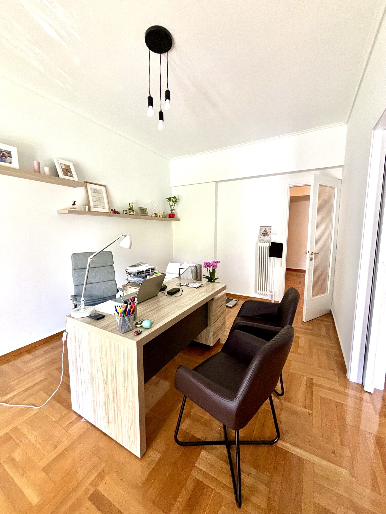
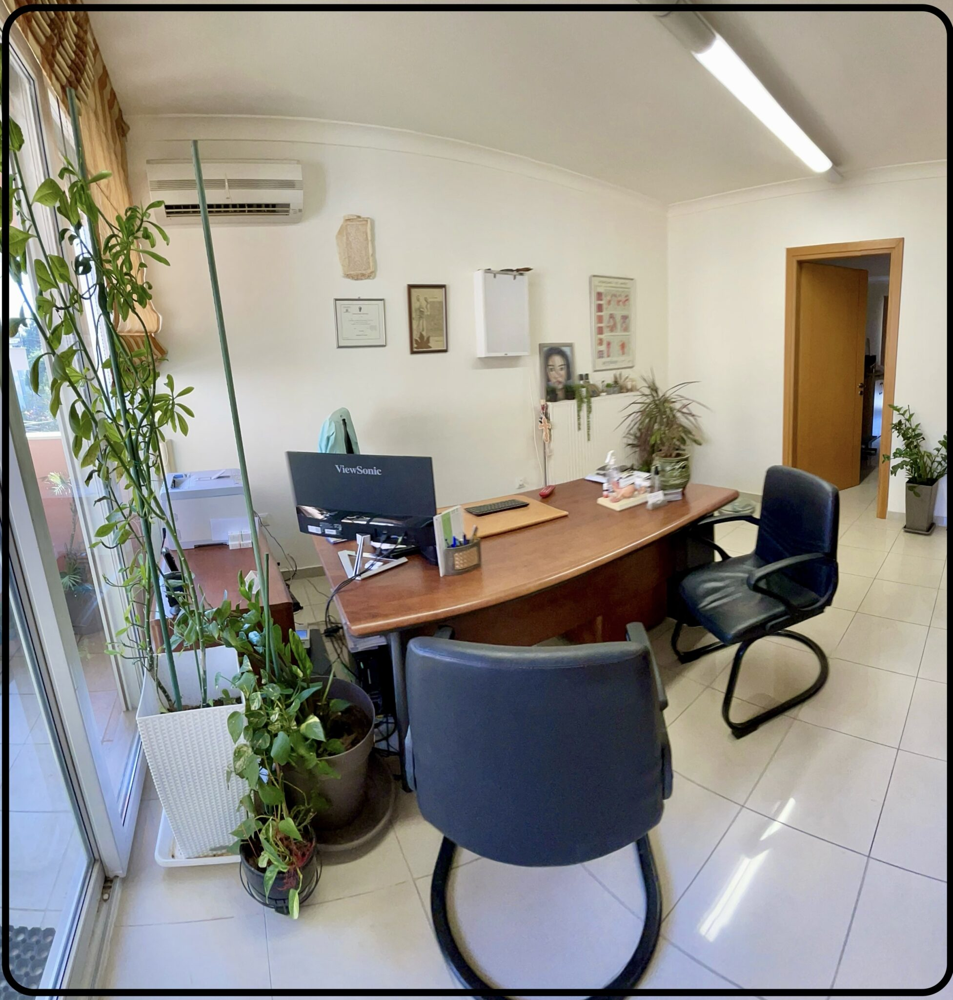

Εξατομικευμένα Προγράμματα Διατροφής
Προγράμματα φτιαγμένα στα μέτρα σου — καλύπτουν τις ανάγκες του κάθε ατόμου ή βελτιώνουν τη συνολική διατροφή και υγεία.
Εξατομικευμένη διατροφική καθοδήγηση, με σεβασμό στην καθημερινότητά σου και στη σχέση σου με το φαγητό. Μαζί, βρίσκουμε τον δικό σου ρυθμό. Συνεδρίες στην Αθήνα, στη Ρόδο και online.
Ζωάννα Μαυρουδάκη Διατροφολόγος – Διαιτολόγος – Ψυχολόγος
Προγράμματα φτιαγμένα στα μέτρα σου — καλύπτουν τις ανάγκες του κάθε ατόμου ή βελτιώνουν τη συνολική διατροφή και υγεία.
Η μέτρηση σύστασης σώματος συμπληρώνει την εικόνα πέρα από το βάρος και βοηθά στην παρακολούθηση της πορείας σου.
Μέσω του 2ου πτυχίου στην Ψυχολογία και της εξειδίκευσης σε διατροφικές διαταραχές: επιστημονικά τεκμηριωμένες στρατηγικές και ουσιαστική υποστήριξη.
Συζητάμε το διατροφικό ιστορικό σου και θέτουμε τους στόχους της συνεργασίας.
Οργανώνουμε τα γεύματα και τις αλλαγές που θα εφαρμόσεις μέχρι την επόμενη συνάντηση.
Στις επόμενες συνεδρίες εξετάζουμε τι λειτούργησε, τι σε δυσκόλεψε και τι χρειάζεται προσαρμογή.
Η διατροφή είναι μέρος της ζωής σου. Γι’ αυτό θέλω πρώτα να γνωρίσω εσένα: πώς κυλά η μέρα σου, τι σου αρέσει, τι σε δυσκολεύει και τι θα ήθελες να αλλάξει.
Οι σπουδές μου στη Διατροφή και την Ψυχολογία διαμορφώνουν τον τρόπο που δουλεύω. Συνδυάζω τη διατροφική καθοδήγηση με την κατανόηση της σχέσης σου με το φαγητό, ώστε το πλάνο που θα φτιάξουμε να έχει θέση στη δική σου καθημερινότητα.
Χαίρομαι που βρίσκεσαι εδώ.Ζωάννα
«Είναι τόσα πολλά που θέλω να πω για αυτή την κοπέλα! Από την στιγμή που ξεκινήσαμε την συνεργασία μας, με βοήθησε πρώτα να διορθώσω την σχέση που έχω με το φαγητό και έπειτα σε όλα τα άλλα! Ήταν εκεί για εμένα κάθε φορά που την χρειαζόμουν ακόμη κι αν δεν ήμασταν σε κάποια περίοδο διατροφής. Οποιαδήποτε ώρα και στιγμή την χρειαζόμουν ήταν εκεί και πάντοτε ευέλικτη, ανοικτή να σε ακούσει, να σου εξηγήσει και να σε βοηθήσει να μάθεις! Το ευχαριστώ είναι λίγο μπροστά σε αυτά που θα ήθελα να της πω!❤️»
Souzana Tagrap
«Μετά από συνεργασία με την κυρία Ζωαννα Μαυρουδακη, είδα σημαντική βελτίωση στην υγεία και το βάρος μου. Από την πρώτη μας συνάντηση, κατάλαβα ότι πρόκειται για μια απόλυτα καταρτισμένη επαγγελματία με βαθιά γνώση στον τομέα της διατροφής. Το πρόγραμμα διατροφής που μου συνέστησε ήταν απόλυτα προσαρμοσμένο στον τρόπο ζωής μου και το καθημερινό μου πρόγραμμα αλλα και στους στοχους μου. Δεν ένιωσα ποτέ πίεση ή περιορισμό. Συστήνω ανεπιφύλακτα την Ζωαννα σε όποιον θέλει να βελτιώσει την ποιότητα της διατροφής του, αλλα και της ψυχολογίας του!»
christie giak
«Εξαιρετική επαγγελματίας, με ευχάριστη παρουσία και απόλυτα σωστή προσέγγιση. Όσον αφορά τη διατροφολογία, είναι μία από τις λίγες διατροφολόγους που δεν σε οδηγεί στην πείνα, αλλά δημιουργεί εξατομικευμένα γεύματα προσαρμοσμένα στις ανάγκες του σώματός σου. Σε βοηθά να δεις το φαγητό ως σύμμαχο στην προσπάθειά σου και όχι ως κάτι που πρέπει να σε γεμίζει ενοχές.»
κατερινα πιερρακου
Ραντεβού online ή δια ζώσης, σε δύο γραφεία.

Συνεδρίες διατροφής στο γραφείο της Αθήνας. Επικοινώνησε για διαθέσιμες ημέρες και ώρες.
Οδηγίες προς το γραφείο
Συνεδρίες διατροφής στο δεύτερο γραφείο, στη Ρόδο, κατόπιν ραντεβού.
Οδηγίες προς το γραφείο| Δευτέρα & Τετάρτη | 18:00 – 21:00 |
| Τρίτη, Πέμπτη & Παρασκευή | 10:00 – 14:00 |
| Σαββατοκύριακο | Κλειστά |
Το ραντεβού επιβεβαιώνεται αφού συμφωνήσουμε ημέρα, ώρα και τρόπο συνεδρίας. Η αποστολή ενός email από μόνη της δεν αποτελεί κράτηση.
Η συνεδρία διαρκεί μία ώρα. Για πληροφορίες σχετικά με το κόστος και τη διαθεσιμότητα, μπορείς να επικοινωνήσεις μαζί μου πριν από την κράτηση.
Επικοινώνησε για διαθεσιμότητα και πληροφορίες για την πρώτη σου συνεδρία.